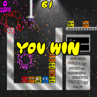
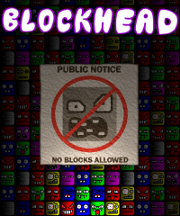

Gameplay
Gameplay is the overall feel and flow of the game. It determines what genre(s)
the game lifts inspiration from as well as the pacing and style.

Blockhead is a two-dimensional puzzle game in the vein of Kirbee's Avalanche or
Dr. Mario. One of the important gameplay decisions I made was to include an
optional countdown timer, which can change the game into either a methodical,
thinking game or an anxious race based on the player's preference.

My current project, Boxland, is a hybrid puzzle / action / adventure game. The
player freely explores the labyrinth of a large factory searching for keys to unlock
new areas. Players will need to be both clever and creative to collect keys since
most puzzles will have multiple solutions. At the same time they will also have to
battle the game's enemies using melee and projectile weapons.
Play Mechanics
Sometimes it's the little things that elevate a good game to great game status.
The specific rules and systems that govern a game's experience often contribute
the most to what makes it addictive and unique.

Blockhead is the first puzzle game to use color blending as a primary tool. The
goal is to get three of the same colored blocks in a row, but the player can also
change a block's color. If a red block is placed touching a blue block, for
example, the blue block turns purple. This creates the possibility for chains
of block destruction and block avalanches.

In Boxland, the player gains different superpowers granted by various magical
sweatshirts, which he uses to move objects and solve puzzles. The shirts are
also equipped with specialized attack moves for combat situations. The different
types of boxes and machines in the game respond differently to both the player
and the environment, creating the possibility for interesting interactions and
complex puzzles.
Story
The story and characters are some of the most important elements in medium to
large-sized games. I've been writing creative fiction both in and out
of games for almost twenty years. I specialize in science-fiction, horror, and
cartoon humor, but I've also worked on comic books, black comedy, and folk tales.